The context
A study tool cannot afford to be fluent and wrong
A general-purpose assistant will answer any dental hygiene question put to it, confidently, from training data the student cannot see and cannot check against the material they will actually be examined on.
The reader: the Review Book itself, with notes, highlights, bookmarks and in-book search.
The tutor: the same book, answering questions, with the cited page beside the answer.
The practice: quizzes, flashcards and questions, every card carrying the page it came from.
A student revising at eleven at night cannot tell a sentence that came from the book from one that merely sounds like it did. They will not catch it. They will memorise it.
The brief
Three rules the product could not break
Everything in DHS Tutor follows from them.
- 01Only the Review BookPassages are ranked against the question first, and the model only ever sees those. No outside knowledge, however confident.
- 02Always show the pageEvery answer, card and question carries its chapter and a page reference like P12, and the cited page opens beside the answer.
- 03Declining is an answerWhen the book doesn’t cover a question, the tutor says so and points to the nearest topic it does cover.
Design decisions
Small calls that keep the book in charge
Each one protects the student’s ability to check an answer, or keeps the interface from competing with the page it is quoting.
- Retrieval before the modelRanking the passages first makes grounding structural, not a promise in a prompt.
- The page, not a footnoteThe cited page opens next to the answer, so checking it costs nothing.
- A refusal is designed“The book doesn’t cover this” is a state with a next step, not an error.
- Nothing casts a shadowOne pixel of border instead, so the book page is the only thing with depth.
In practice
A student, from a question to the page it came from
Three surfaces, one book underneath all of them.
01
Ask, and get the book back
The question goes to a ranked set of passages before it goes anywhere else. The answer carries numbered markers, each source names its chapter and page, and opening one puts the book page beside the answer with the cited sentences highlighted on it. The composer repeats the rule under every message: answers come only from the DHS Review Book.
- 1The answer
- 2Numbered markers
- 3Chapter and page
- 4The page itself
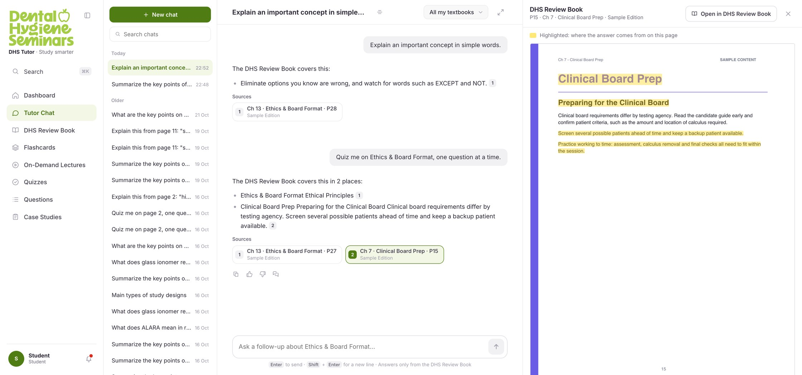
02
Read the book, and mark it up
The reader opens where the student left off. Notes, highlights and bookmarks all live against a page, and the study panel sorts them by it. Tutor and Practice sit in the same panel, so a question never means leaving the page.
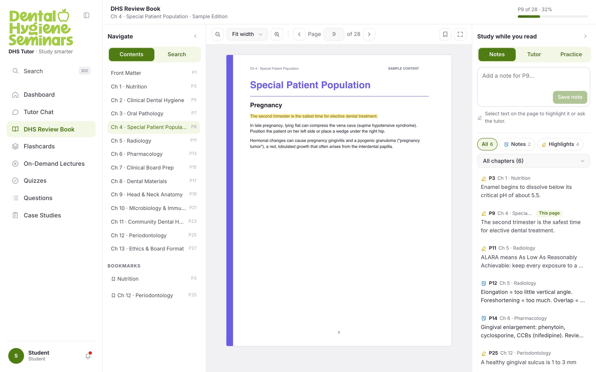
03
See where the weak chapters are
The dashboard opens on the exam countdown, then readiness, accuracy and flashcard progress, then the chapters the student is weakest in, each with a way straight back into the book.
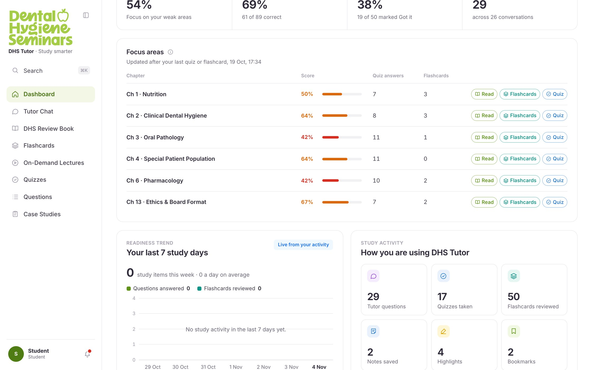
The build
The specification was a picture and a paragraph
A developer handoff arrived for the student experience: 44 screens with a restyled counterpart, 15 that existed only as a new idea, and 56 admin screens that were never restyled at all. Each one was a flat image with a paragraph under it saying roughly what should go where.
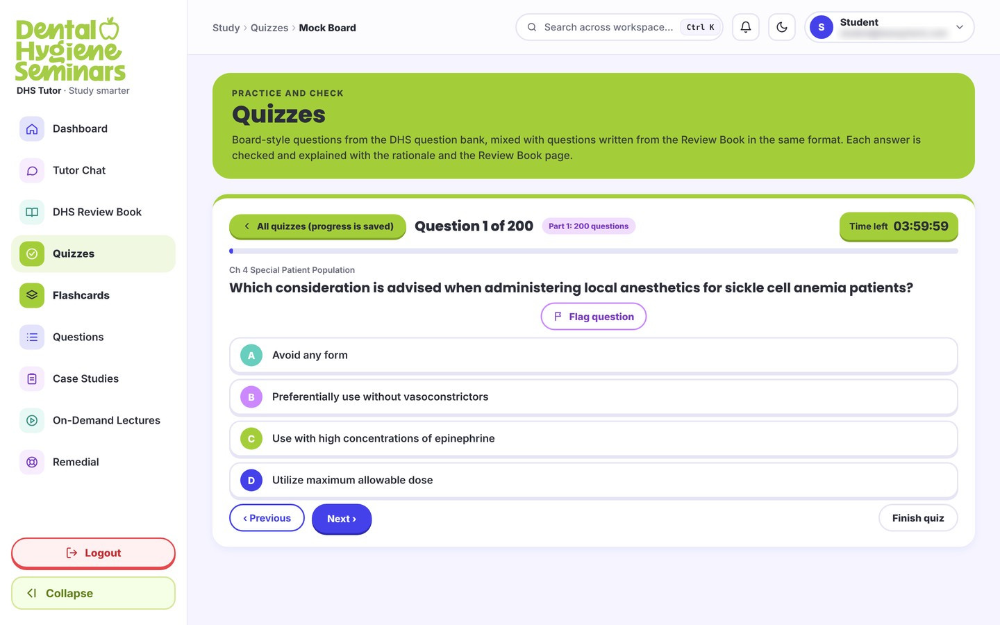
That paragraph is the whole brief for the screen. It names the furniture: what to take out, what to put where, what to call it. It cannot say what the screen does before anything has been answered, when the clock runs out, when the question fails to load, at 375 pixels wide, or in the dark theme. Those are most of a screen, and none of them can be approved from a picture.
So I built the rest of it. The high-fidelity screens first, then a working prototype, then the front end itself: thirteen pages covering the reader, the tutor, quizzes, flashcards, questions, case studies, lectures and the account, over seven shared components and one stylesheet, running against a real API rather than clicking between frames. It was written in Claude Code, and one stylesheet carries two brands, the original purple and the Dental Hygiene Seminars green, without a second design.
A picture of a screen can be approved without anyone finding out what is missing from it. A built screen cannot.
The restyle
103 screens, and twelve things wrong with them
The same handoff had a palette problem running through it: teal, purple, lime, indigo and red rotating across card bands, icon tiles, page heroes and even the A–D answer letters. It could not be argued with on taste, so I reviewed it screen by screen and wrote up what was there.
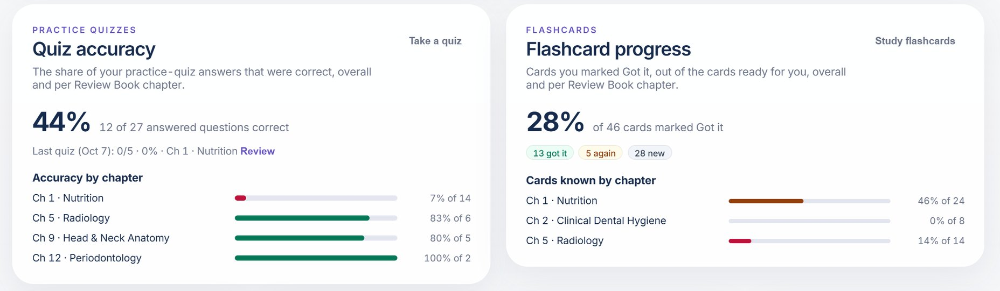
Twelve patterns came out of it, each severity-rated and listed against every screen it appeared on. Colour carries no meaning ran across 27 screens. Lime does too many jobs across 45. The quiz screen in the build section shows both at once: its answer letters run teal, purple, lime and indigo, so the lime C reads as the correct answer before the student has chosen. Elsewhere, red marked a section called “Your focus areas”, which is not an error condition. Colour that changes with position cannot signal state, and the palette was telling students things that were not true.
Patterns at that frequency are a system fault, not a set of instances. Patching them one at a time would have left the fault in place, so the audit became the brief for the system that replaced it.
The system
Twelve rules, and a page that proves them
The system is defined by what it refuses. Each hard rule answers a pattern the audit named.
- R1No shadows on buttons, in any state or theme.
- R2No shadows on surfaces. Cards, menus and modals use a border.
- R3White background. Light theme is pure
#ffffff, untinted. - R4Tokens only. Colours come from CSS variables.
- R5No native select. One component, everywhere.
- R6No decorative eyebrows. An eyebrow must name its content.
- R7No icon tiles on dashboard cards.
- R8One gradient, on the exam countdown number.
- R9Equal-height neighbours. Extra content scrolls inside.
- R10Links don’t underline; they change colour.
- R11Yellow means highlight, only on book pages.
- R12No icon library. One icon file.
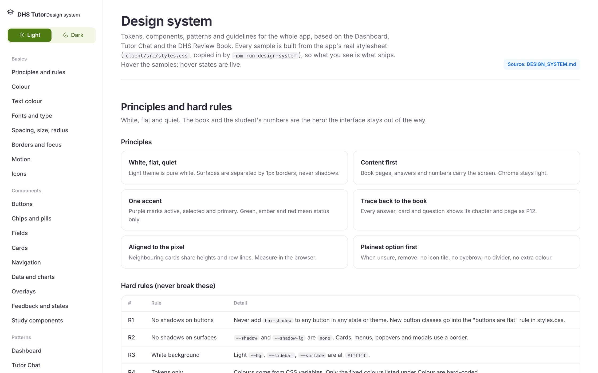
Writing the rules down was not enough on its own. A written system describes components; it does not demonstrate them, and with one person designing and building, a specification and a stylesheet drift apart quietly. So the live page is generated from the source, and the generated regions are not hand-editable. Its samples cannot show behaviour the code does not have.
The screens
Twenty-five screens, and not one new component
A system is only worth writing down if it survives the twenty-fifth screen. Twenty-five were designed and built, covering the dashboard, the chat, the reader, flashcards, quizzes, questions, case studies, lectures, search, notifications and the account. None of them introduced a new component. Six are below; the three the page has already walked through are left out.
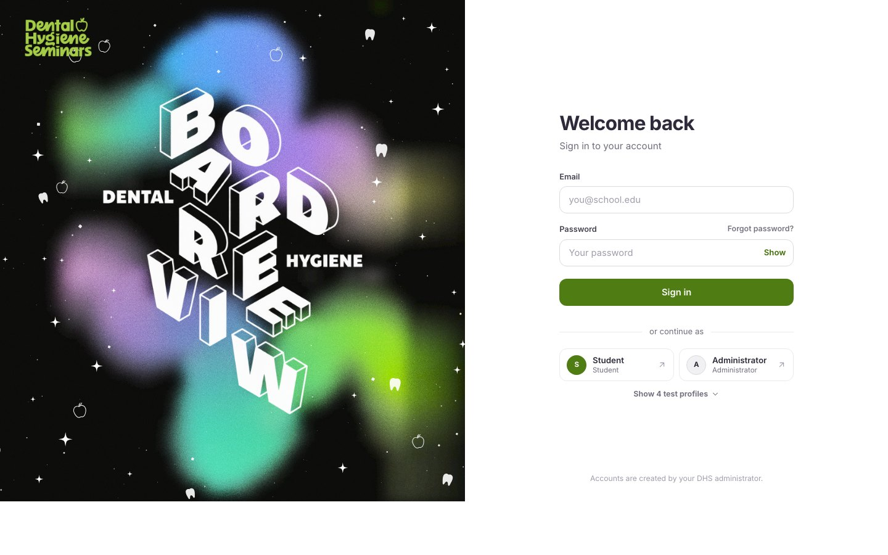
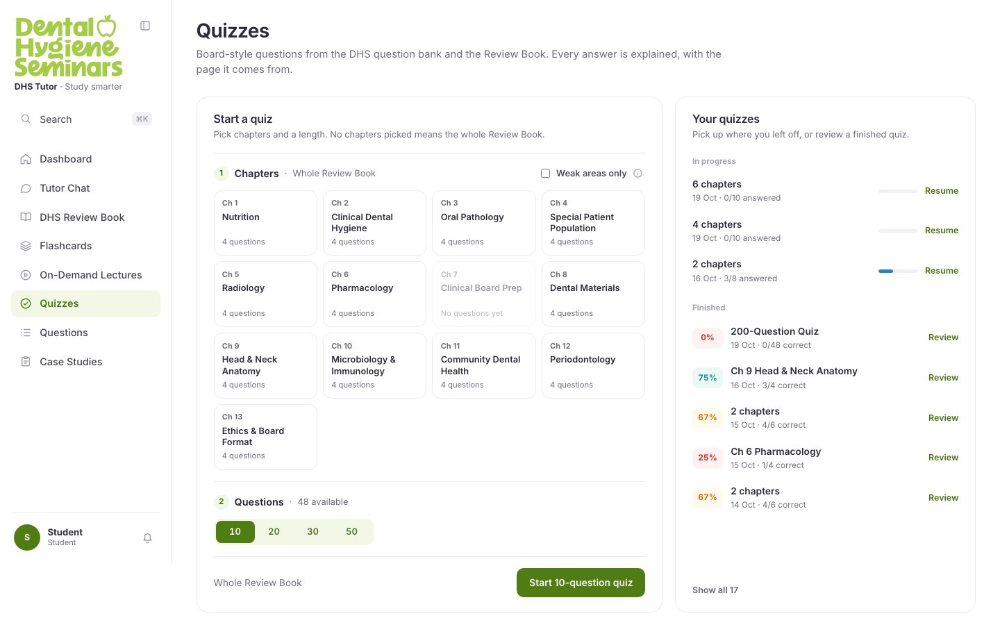
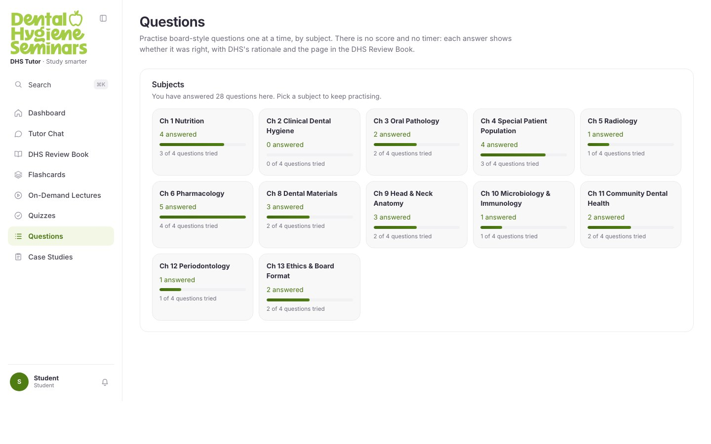
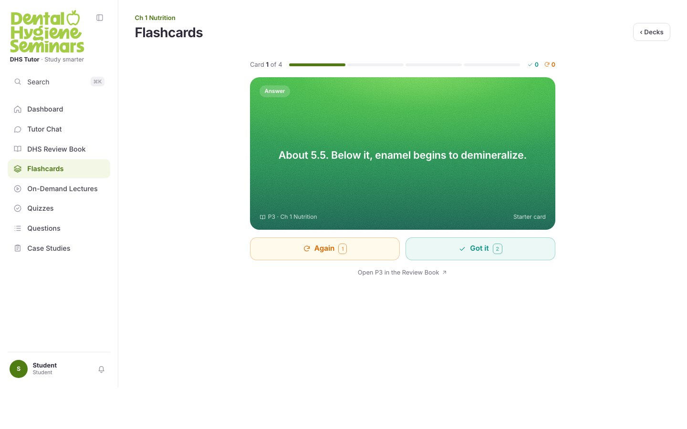
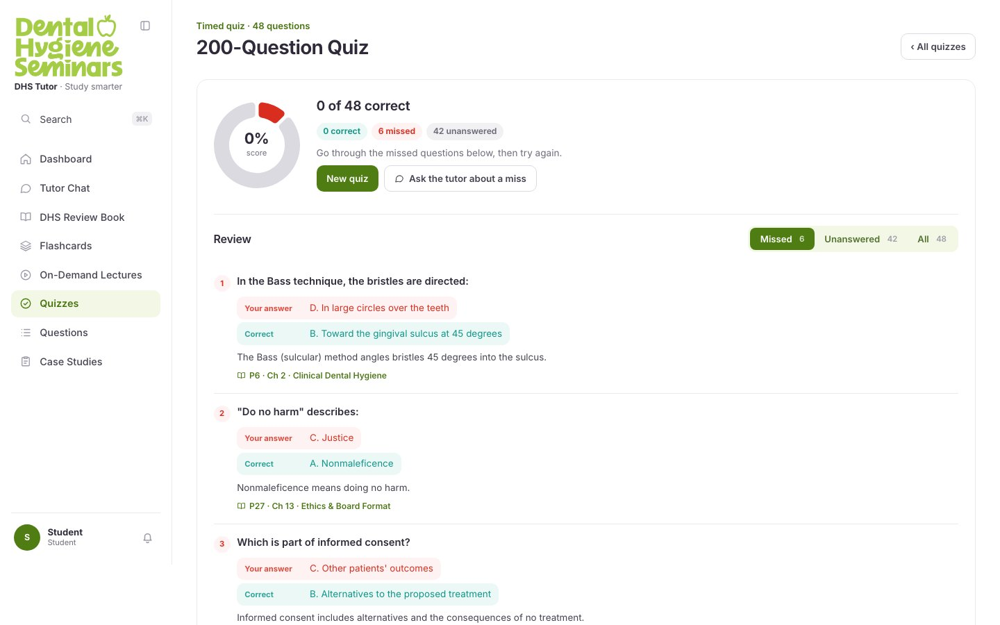
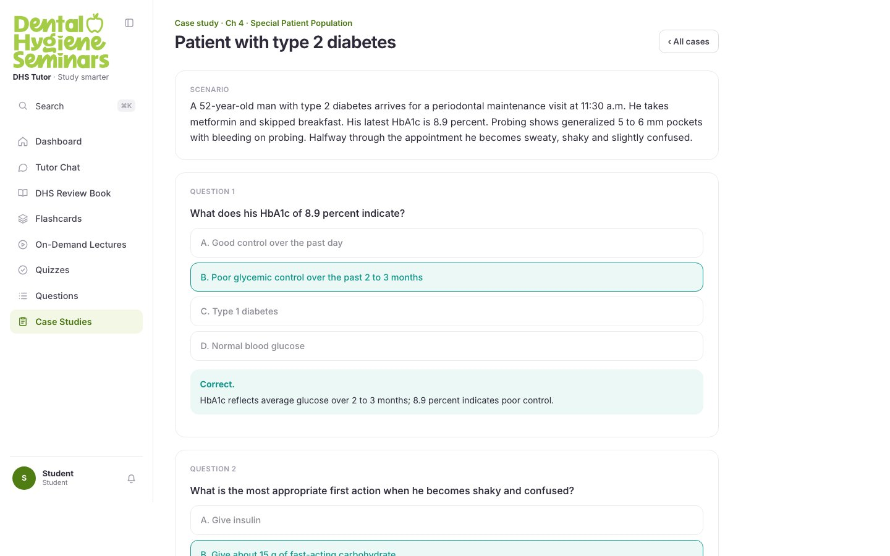
The same rule runs through all of them. A flashcard carries its page and a way to open it. Missed quiz questions lead the review, each with its rationale and the page the answer is on. A case study holds its scenario at the top and explains every answer in place. Even the questions screen counts by chapter, because a chapter is the unit a page belongs to. Every page reference on every screen is a link back to the book. That is the product, repeated twenty-five times.
Dark mode
Dark everywhere except the book
All twenty-five exist in both themes. Dark is where a token system is actually tested, because nothing is allowed to be a hard-coded colour. The same components hold, with no second layout. Only the token values change: the accent lifts so it still reads against near-black, and the score colours move from orange and red to amber and pink, which keep their distance from the background and from each other where the light-theme pair does not.
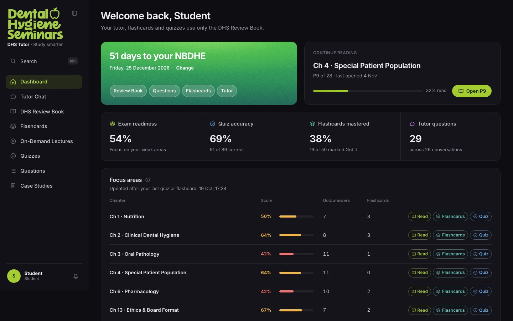
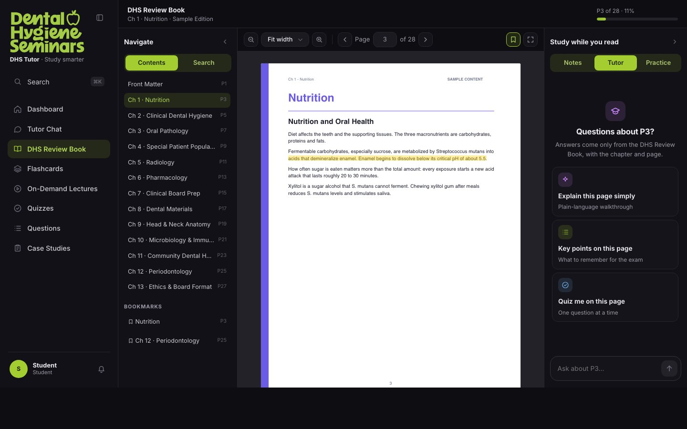
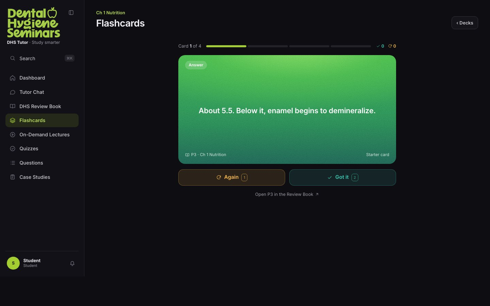
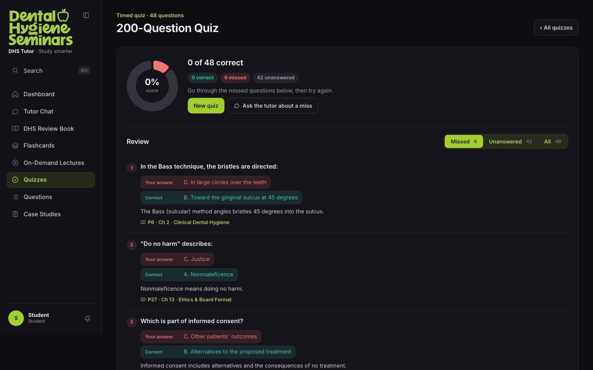
One surface does not invert. The book page stays white in both themes, because it is a reproduction of a printed page, the thing the student is being examined on. Inverting it would mean the page they check an answer against is not the page the examiner set.
The theme touches everything the product owns, and nothing it is quoting.
What I learned
Critique is cheaper than construction
I audited before I had a replacement: I named twelve faults across 103 screens before writing the rules that answer them. It worked, but in the wrong order. Several findings were the same missing rule observed five times, and drafting the system first would have found that faster.
A refusal is a feature: the hardest thing to design was not the answer, it was what happens when the book has nothing to say. Getting that wrong makes the product look broken; getting it right makes it trustworthy.
Restraint is an argument: the flat, white, single-accent system is not a taste preference. It is what makes a page reference and a highlighted passage the loudest things on the screen.